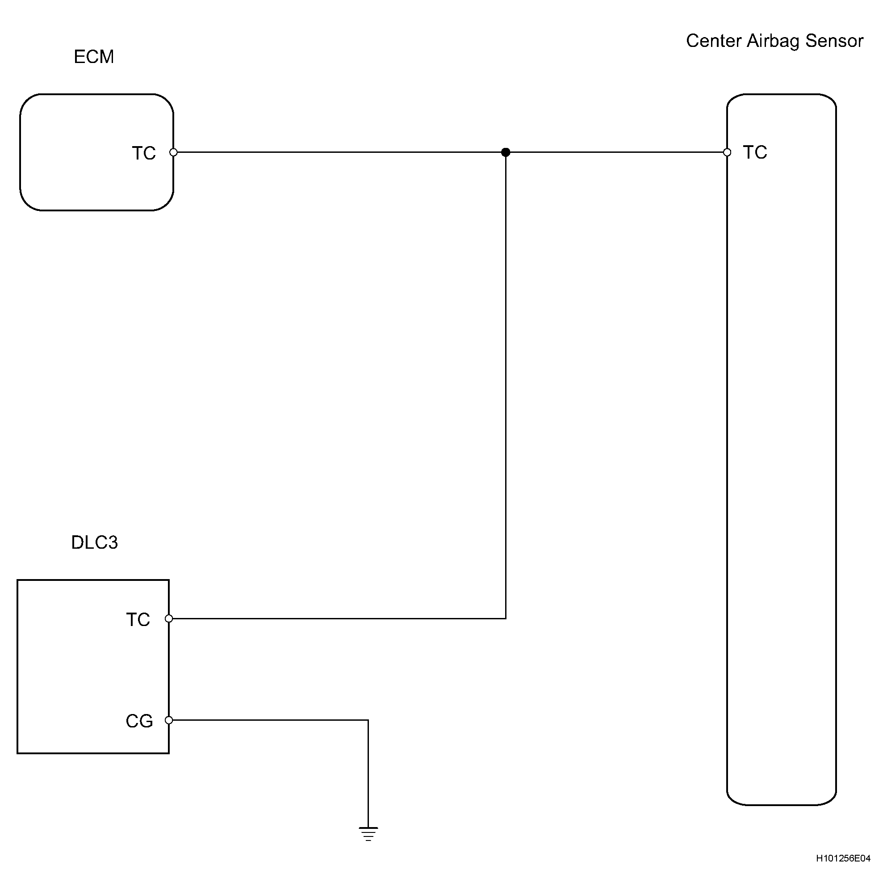

Home
>>
Scion
>>
2006
>>
xB Standard
>>
Repair and Diagnosis
>>
Restraints
>>
Air Bag, SRS
>>
Supplemental Restraint System
>>
Airbag System
>>
TC and CG Terminal Circuit (2005/12- )
>>
Wiring Diagram
TC and CG Terminal Circuit (2005/12- ): Wiring Diagram
Fig 1: TC And CG Terminal - Wiring Diagram

Courtesy of © TOYOTA, LICENSE AGREEMENT TMS1002